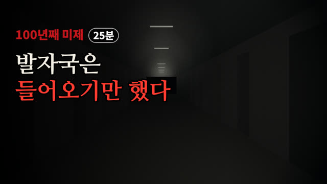
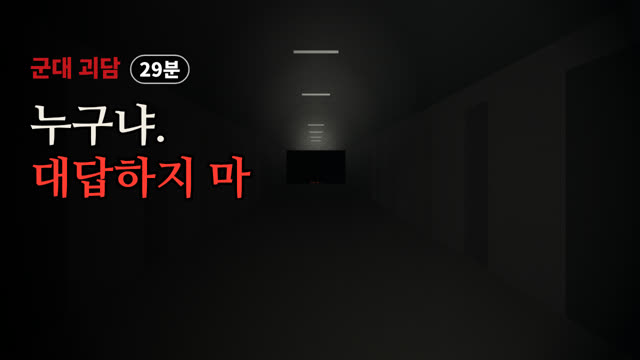
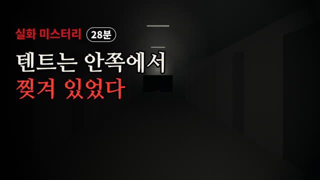
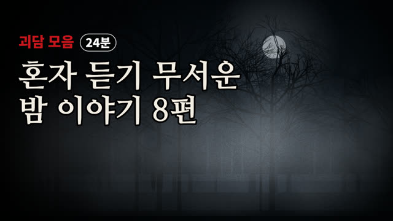
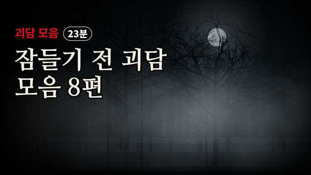
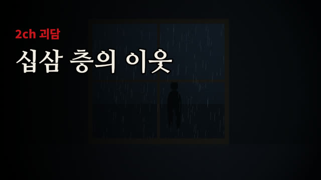

괴담 영상 보관함
매주 월·목 저녁, 한 주제를 30분 동안 들려주는 미스터리·괴담 영상이 자동으로 만들어집니다. 유튜브 연결을 해 두면 유튜브에도 자동으로 올라갑니다 (구글 심사 전에는 비공개 → 「유튜브 공개 설정」 눌러서 공개로 바꾸기).

눈 위의 발자국은 들어오기만 했다 | 100년째 미제, 힌터카이펙 일가 사건 [미스터리]
2026-11-14 · 30분 이야기 · 25분 04초

제목·설명·태그 보기
[제목] 눈 위의 발자국은 들어오기만 했다 | 100년째 미제, 힌터카이펙 일가 사건 [미스터리] [설명] 1922년 독일 바이에른, 숲 끝의 외딴 농가. 눈 위에는 숲에서 집으로 들어온 발자국만 있고, 나간 발자국은 없었습니다. 다락에서는 밤마다 발소리가 들렸고, 아무도 구독하지 않은 신문이 집 안에서 발견됐습니다. 그리고 며칠 뒤, 그 집의 여섯 명이 하룻밤 사이에 모두 세상을 떠납니다. 그런데 그 뒤에도 굴뚝에서는 연기가 피어올랐습니다. 100년이 넘도록 풀리지 않은 힌터카이펙 사건을 처음부터 끝까지 따라갑니다. 📖 목차 0:00 시작 1:32 1부. 숲 끝의 외딴 농가 3:44 2부. 그만둔 하녀 4:58 3부. 한 방향의 발자국 7:51 4부. 첫 출근한 하녀 8:58 5부. 아무도 나오지 않은 나흘 10:33 6부. 헛간의 문 12:38 7부. 그날 밤, 헛간에서 14:23 8부. 그는 그 집에 살았다 16:38 9부. 용의자들 19:26 10부. 벽 속의 곡괭이 20:22 11부. 풀리지 않는 질문들 22:14 12부. 백 년 뒤에도 23:39 13부. 머리 위의 발소리 ※ 실제 사건을 공개된 기록과 보도를 바탕으로 정리했습니다. 수사관의 추정과 소문은 본문에서 구분해 전해 드립니다. 희생자분들의 명복을 빕니다. ※ 낭독: AI 음성 · 배경음·화면: 자체 제작 #미스터리 #힌터카이펙 #미제사건 #세계미스터리 #실화 #공포라디오 [태그] 힌터카이펙, 힌터카이펙 사건, 미제 사건, 미스터리, 세계 미스터리, 실화 미스터리, 독일 미제사건, 다락방, 공포 라디오, 무서운 이야기, 잠잘 때 듣는, 미스터리 다큐

지도에서 지워진 13초소, 그것은 20년 전 암구호로 수하했다 | 군대 괴담 [심야 괴담]
2026-11-14 · 30분 이야기 · 28분 57초

제목·설명·태그 보기
[제목] 지도에서 지워진 13초소, 그것은 20년 전 암구호로 수하했다 | 군대 괴담 [심야 괴담] [설명] 강원도 최전방 GOP. 소대가 맡은 초소는 열두 개인데, 지도에는 볼펜으로 지운 자리가 하나 더 있습니다. 새벽 두 시에서 네 시 사이, 능선 쪽에서 군화 소리가 내려오면 절대 먼저 수하하지 말 것. 그리고 저쪽에서 먼저 '누구냐'고 묻는다면, 절대로 대답하지 말 것. 30분 동안 한 사람의 이야기로 끝까지 들려드립니다. 📖 목차 0:00 시작 1:13 1부. 철책 3:16 2부. 세 가지 규칙 5:23 3부. 십이 초소 9:18 4부. 폐쇄된 초소 11:55 5부. 김 병장의 마지막 밤 14:57 6부. 근무 일지 17:54 7부. 혼자 서는 밤 22:31 8부. 교대 24:35 9부. 전역하던 날 26:56 10부. 다시, 누구냐 ※ 이 이야기는 창작한 괴담(픽션)입니다. 실제 부대·인물과 관계없습니다. ※ 낭독: AI 음성 · 배경음·화면: 자체 제작 #군대괴담 #괴담 #무서운이야기 #심야괴담 #GOP #공포라디오 [태그] 군대 괴담, GOP 괴담, 괴담, 무서운 이야기, 심야 괴담, 공포 라디오, 실화 괴담, 군대 무서운 이야기, 초소 괴담, 암구호, 잠잘 때 듣는 괴담, 괴담 낭독

텐트는 안쪽에서 찢겨 있었다 | 디아틀로프 고개 사건, 아홉 명의 마지막 밤 [미스터리]
2026-11-13 · 30분 이야기 · 27분 39초

제목·설명·태그 보기
[제목] 텐트는 안쪽에서 찢겨 있었다 | 디아틀로프 고개 사건, 아홉 명의 마지막 밤 [미스터리] [설명] 1959년 2월, 러시아 우랄 산맥 '죽은 산'의 비탈. 수색대가 발견한 텐트는 안쪽에서 찢겨 있었고, 아홉 명의 대학생은 신발도 외투도 없이 영하의 눈밭으로 사라졌습니다. 몸 안의 뼈만 부서진 시신, 사라진 눈과 혀, 옷에서 나온 방사능. 60년 넘게 풀리지 않은 디아틀로프 고개 사건을 처음부터 끝까지, 하나의 이야기로 따라갑니다. 📖 목차 0:00 시작 1:27 1부. 아홉 명의 대학생 3:47 2부. 돌아간 한 사람 6:38 3부. 이월 일일, 마지막 밤 8:24 4부. 산비탈의 텐트 11:19 5부. 삼나무 아래 13:51 6부. 오월의 골짜기 17:33 7부. 무엇이 그들을 쫓아냈나 21:01 8부. 육십 년 뒤의 대답 25:14 9부. 죽은 산에 남은 것 ※ 실제 사건을 공개된 기록과 보도를 바탕으로 정리했습니다. 추측과 소문은 본문에서 구분해 전해 드립니다. ※ 낭독: AI 음성 · 배경음·화면: 자체 제작 #미스터리 #디아틀로프 #미제사건 #세계미스터리 #괴담 #공포라디오 [태그] 디아틀로프, 디아틀로프 고개, 디아틀로프 고개 사건, 미스터리, 세계 미스터리, 미제 사건, 실화 미스터리, 러시아 미스터리, 죽은 산, 괴담, 공포 라디오, 잠잘 때 듣는, 미스터리 다큐

혼자 듣기 무서운 밤 이야기 8편
2026-11-13 · 30분 이야기 · 24분 10초

제목·설명·태그 보기
[제목] 무서운 이야기 8편 모음 | 심야 버스·새벽 택시·야간 편의점 괴담 | 잠잘 때 듣는 공포 라디오 24분 [설명] 혼자 듣기 무서운 밤 이야기 8편 — 잠 못 드는 밤, 불 끄고 듣는 괴담 8편 (24분) 익명 게시판 괴담 형식의 창작 이야기를, 낮고 잔잔한 목소리로 한 편씩 천천히 읽어 드립니다. 각 이야기 끝에는 작성자의 추가 글(후기)도 함께 읽어 드려요. 이어폰 끼고, 불 끄고 들어 보세요. 📖 이야기 목록 0:00 인트로 0:40 제1화 심야 버스 — 막차의 마지막 정류장 3:33 제2화 새벽 택시 — 뒷좌석의 손님 6:30 제3화 야간 편의점 — 계산대 너머의 손님 10:00 제4화 계곡 캠핑장 — 텐트 밖의 발소리 12:41 제5화 시골 마을 — 할머니의 마지막 규칙 15:35 제6화 밤의 학교 — 네 번째 계단 18:15 제7화 산길 터널 — 구 터널의 라디오 21:01 제8화 낡은 여관 — 이백삼 호의 손님 🔔 매주 새 괴담 모음이 올라옵니다. 구독하고 함께 들어요. 💬 가장 무서웠던 이야기를 댓글로 알려 주세요. ※ 이 영상의 이야기는 모두 창작한 픽션입니다. 실제 인물·장소·사건과 관계없습니다. ※ 낭독: AI 음성(Supertonic) — 이 영상의 목소리는 AI가 생성했습니다 · 화면·효과음: 자체 제작 #괴담 #괴담모음 #무서운이야기 #괴담낭독 #수면괴담 #공포라디오 [태그] 괴담, 괴담 모음, 무서운 이야기, 괴담 낭독, 공포 라디오, 수면 괴담, 잠잘 때 듣는 괴담, 2ch 괴담, 실화 괴담, 미스터리, 심야 버스, 새벽 택시, 야간 편의점, 계곡 캠핑장, 시골 마을, 밤의 학교, 산길 터널, 낡은 여관

잠들기 전 괴담 모음 8편
2026-11-13 · 30분 이야기 · 23분 26초

제목·설명·태그 보기
[제목] [괴담 모음] 잠들기 전 괴담 모음 8편 | 산길 터널·지하철·산장 대피소 | 잠들기 전 듣는 잔잔한 낭독 23분 [설명] 잠들기 전 괴담 모음 8편 — 잠 못 드는 밤, 불 끄고 듣는 괴담 8편 (23분) 익명 게시판 괴담 형식의 창작 이야기를, 낮고 잔잔한 목소리로 한 편씩 천천히 읽어 드립니다. 각 이야기 끝에는 작성자의 추가 글(후기)도 함께 읽어 드려요. 이어폰 끼고, 불 끄고 들어 보세요. 📖 이야기 목록 0:00 인트로 0:23 제1화 산길 터널 — 돌아오지 않는 터널 3:05 제2화 지하철 — 없는 역의 안내 방송 6:03 제3화 산장 대피소 — 눈 오는 밤의 노크 9:03 제4화 중고 거래 — 거울 속의 문 11:53 제5화 고시원 — 고시원 총무의 당부 14:50 제6화 낡은 여관 — 여관 주인의 부탁 17:33 제7화 폐병원 — 닫힌 병동의 간호사 20:17 제8화 오래된 아파트 — 이사 온 첫 주 🔔 매주 새 괴담 모음이 올라옵니다. 구독하고 함께 들어요. 💬 가장 무서웠던 이야기를 댓글로 알려 주세요. ※ 이 영상의 이야기는 모두 창작한 픽션입니다. 실제 인물·장소·사건과 관계없습니다. ※ 낭독: AI 음성(Supertonic) — 이 영상의 목소리는 AI가 생성했습니다 · 화면·효과음: 자체 제작 #괴담 #괴담모음 #무서운이야기 #괴담낭독 #수면괴담 #공포라디오 [태그] 괴담, 괴담 모음, 무서운 이야기, 괴담 낭독, 공포 라디오, 수면 괴담, 잠잘 때 듣는 괴담, 2ch 괴담, 실화 괴담, 미스터리, 산길 터널, 지하철, 산장 대피소, 중고 거래, 고시원, 낡은 여관, 폐병원, 오래된 아파트
야간 경비 일지
2026-11-11 · 30분 이야기 · 2분 13초

제목·설명·태그 보기
[제목] [2ch 괴담] 야간 경비 일지 | 잠들기 전 듣는 잔잔한 괴담 낭독 [설명] 야간 경비 일지 일본 익명 게시판 2ch 괴담 형식으로 만든 창작 이야기를 잔잔하게 읽어 드립니다. 불 끄고, 이어폰 끼고 들어 보세요. 0:00 시작 1:15 이야기 1 ※ 이 이야기는 2ch 괴담 형식으로 창작한 픽션입니다. 실제 인물·장소와 관계없습니다. ※ 낭독: AI 음성(Supertonic) — 이 영상의 목소리는 AI가 생성했습니다 · 화면·효과음: 자체 제작 #괴담 #2ch괴담 #무서운이야기 #괴담낭독 #공포 #수면괴담 [태그] 괴담, 2ch 괴담, 일본 괴담, 무서운 이야기, 공포 낭독, 괴담 낭독, 수면 괴담, 미스터리, 오컬트, 야간 경비 일지

돌아오지 않는 터널
2026-11-11 · 30분 이야기 · 2분 14초

제목·설명·태그 보기
[제목] [2ch 괴담] 돌아오지 않는 터널 | 잠들기 전 듣는 잔잔한 괴담 낭독 [설명] 돌아오지 않는 터널 일본 익명 게시판 2ch 괴담 형식으로 만든 창작 이야기를 잔잔하게 읽어 드립니다. 불 끄고, 이어폰 끼고 들어 보세요. 0:00 시작 1:14 이야기 1 ※ 이 이야기는 2ch 괴담 형식으로 창작한 픽션입니다. 실제 인물·장소와 관계없습니다. ※ 낭독: AI 음성(Supertonic) — 이 영상의 목소리는 AI가 생성했습니다 · 화면·효과음: 자체 제작 #괴담 #2ch괴담 #무서운이야기 #괴담낭독 #공포 #수면괴담 [태그] 괴담, 2ch 괴담, 일본 괴담, 무서운 이야기, 공포 낭독, 괴담 낭독, 수면 괴담, 미스터리, 오컬트, 돌아오지 않는 터널
야간 편의점의 마지막 손님
2026-11-11 · 30분 이야기 · 2분 38초

제목·설명·태그 보기
[제목] [2ch 괴담] 야간 편의점의 마지막 손님 | 잠들기 전 듣는 잔잔한 괴담 낭독 [설명] 야간 편의점의 마지막 손님 일본 익명 게시판 2ch 괴담 형식으로 만든 창작 이야기를 잔잔하게 읽어 드립니다. 불 끄고, 이어폰 끼고 들어 보세요. 0:00 시작 1:22 이야기 1 ※ 이 이야기는 2ch 괴담 형식으로 창작한 픽션입니다. 실제 인물·장소와 관계없습니다. ※ 낭독: AI 음성(Supertonic) — 이 영상의 목소리는 AI가 생성했습니다 · 화면·효과음: 자체 제작 #괴담 #2ch괴담 #무서운이야기 #괴담낭독 #공포 #수면괴담 [태그] 괴담, 2ch 괴담, 일본 괴담, 무서운 이야기, 공포 낭독, 괴담 낭독, 수면 괴담, 미스터리, 오컬트, 야간 편의점의 마지막 손님
창밖의 여자
2026-11-11 · 30분 이야기 · 1분 45초

제목·설명·태그 보기
[제목] [2ch 괴담] 창밖의 여자 | 잠들기 전 듣는 잔잔한 괴담 낭독 [설명] 창밖의 여자 일본 익명 게시판 2ch 괴담 형식으로 만든 창작 이야기를 잔잔하게 읽어 드립니다. 불 끄고, 이어폰 끼고 들어 보세요. 0:00 시작 1:02 이야기 1 ※ 이 이야기는 2ch 괴담 형식으로 창작한 픽션입니다. 실제 인물·장소와 관계없습니다. ※ 낭독: AI 음성(Supertonic) — 이 영상의 목소리는 AI가 생성했습니다 · 화면·효과음: 자체 제작 #괴담 #2ch괴담 #무서운이야기 #괴담낭독 #공포 #수면괴담 [태그] 괴담, 2ch 괴담, 일본 괴담, 무서운 이야기, 공포 낭독, 괴담 낭독, 수면 괴담, 미스터리, 오컬트, 창밖의 여자
여관 주인의 부탁
2026-11-11 · 30분 이야기 · 1분 50초

제목·설명·태그 보기
[제목] [2ch 괴담] 여관 주인의 부탁 | 잠들기 전 듣는 잔잔한 괴담 낭독 [설명] 여관 주인의 부탁 일본 익명 게시판 2ch 괴담 형식으로 만든 창작 이야기를 잔잔하게 읽어 드립니다. 불 끄고, 이어폰 끼고 들어 보세요. 0:00 시작 1:06 이야기 1 ※ 이 이야기는 2ch 괴담 형식으로 창작한 픽션입니다. 실제 인물·장소와 관계없습니다. ※ 낭독: AI 음성(Supertonic) — 이 영상의 목소리는 AI가 생성했습니다 · 화면·효과음: 자체 제작 #괴담 #2ch괴담 #무서운이야기 #괴담낭독 #공포 #수면괴담 [태그] 괴담, 2ch 괴담, 일본 괴담, 무서운 이야기, 공포 낭독, 괴담 낭독, 수면 괴담, 미스터리, 오컬트, 여관 주인의 부탁
뒷산의 종소리
2026-11-11 · 30분 이야기 · 1분 58초

제목·설명·태그 보기
[제목] [2ch 괴담] 뒷산의 종소리 | 잠들기 전 듣는 잔잔한 괴담 낭독 [설명] 뒷산의 종소리 일본 익명 게시판 2ch 괴담 형식으로 만든 창작 이야기를 잔잔하게 읽어 드립니다. 불 끄고, 이어폰 끼고 들어 보세요. 0:00 시작 1:09 이야기 1 ※ 이 이야기는 2ch 괴담 형식으로 창작한 픽션입니다. 실제 인물·장소와 관계없습니다. ※ 낭독: AI 음성(Supertonic) — 이 영상의 목소리는 AI가 생성했습니다 · 화면·효과음: 자체 제작 #괴담 #2ch괴담 #무서운이야기 #괴담낭독 #공포 #수면괴담 [태그] 괴담, 2ch 괴담, 일본 괴담, 무서운 이야기, 공포 낭독, 괴담 낭독, 수면 괴담, 미스터리, 오컬트, 뒷산의 종소리
할머니의 마지막 규칙
2026-11-11 · 30분 이야기 · 1분 50초

제목·설명·태그 보기
[제목] [2ch 괴담] 할머니의 마지막 규칙 | 잠들기 전 듣는 잔잔한 괴담 낭독 [설명] 할머니의 마지막 규칙 일본 익명 게시판 2ch 괴담 형식으로 만든 창작 이야기를 잔잔하게 읽어 드립니다. 불 끄고, 이어폰 끼고 들어 보세요. 0:00 시작 1:09 이야기 1 ※ 이 이야기는 2ch 괴담 형식으로 창작한 픽션입니다. 실제 인물·장소와 관계없습니다. ※ 낭독: AI 음성(Supertonic) — 이 영상의 목소리는 AI가 생성했습니다 · 화면·효과음: 자체 제작 #괴담 #2ch괴담 #무서운이야기 #괴담낭독 #공포 #수면괴담 [태그] 괴담, 2ch 괴담, 일본 괴담, 무서운 이야기, 공포 낭독, 괴담 낭독, 수면 괴담, 미스터리, 오컬트, 할머니의 마지막 규칙
십삼 층의 이웃
2026-11-11 · 30분 이야기 · 1분 54초

제목·설명·태그 보기
[제목] [2ch 괴담] 십삼 층의 이웃 | 잠들기 전 듣는 잔잔한 괴담 낭독 [설명] 십삼 층의 이웃 일본 익명 게시판 2ch 괴담 형식으로 만든 창작 이야기를 잔잔하게 읽어 드립니다. 불 끄고, 이어폰 끼고 들어 보세요. 0:00 시작 1:00 이야기 1 ※ 이 이야기는 2ch 괴담 형식으로 창작한 픽션입니다. 실제 인물·장소와 관계없습니다. ※ 낭독: AI 음성(Supertonic) — 이 영상의 목소리는 AI가 생성했습니다 · 화면·효과음: 자체 제작 #괴담 #2ch괴담 #무서운이야기 #괴담낭독 #공포 #수면괴담 [태그] 괴담, 2ch 괴담, 일본 괴담, 무서운 이야기, 공포 낭독, 괴담 낭독, 수면 괴담, 미스터리, 오컬트, 십삼 층의 이웃
야간 경비 일지
2026-11-11 · 30분 이야기 · 1분 46초

제목·설명·태그 보기
[제목] [2ch 괴담] 야간 경비 일지 | 잠들기 전 듣는 잔잔한 괴담 낭독 [설명] 야간 경비 일지 일본 익명 게시판 2ch 괴담 형식으로 만든 창작 이야기를 잔잔하게 읽어 드립니다. 불 끄고, 이어폰 끼고 들어 보세요. 0:00 시작 1:00 이야기 1 ※ 이 이야기는 2ch 괴담 형식으로 창작한 픽션입니다. 실제 인물·장소와 관계없습니다. ※ 낭독: AI 음성(Supertonic) — 이 영상의 목소리는 AI가 생성했습니다 · 화면·효과음: 자체 제작 #괴담 #2ch괴담 #무서운이야기 #괴담낭독 #공포 #수면괴담 [태그] 괴담, 2ch 괴담, 일본 괴담, 무서운 이야기, 공포 낭독, 괴담 낭독, 수면 괴담, 미스터리, 오컬트, 야간 경비 일지